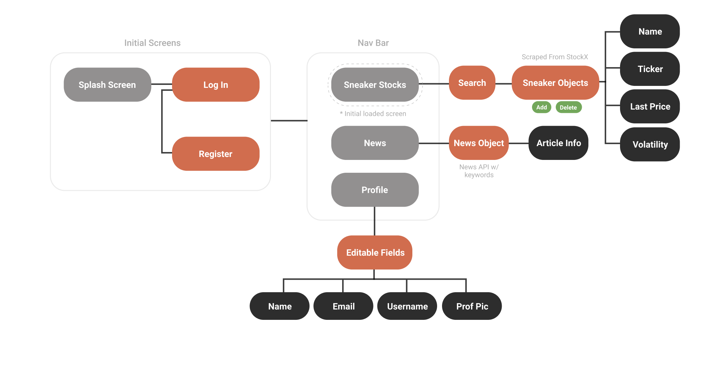
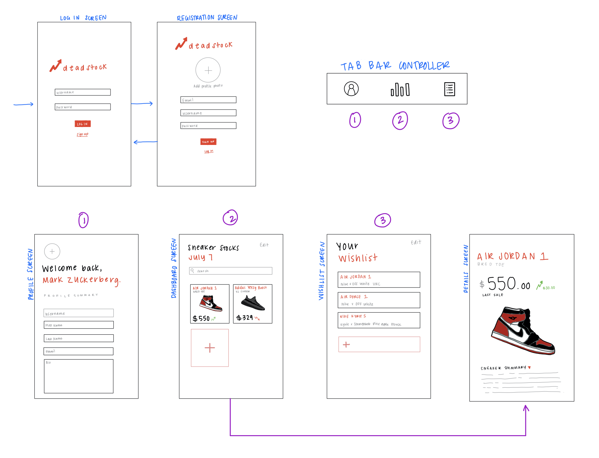
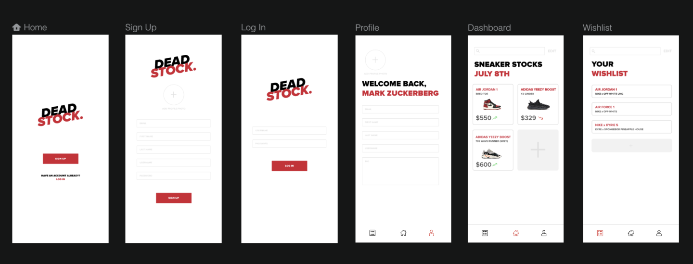
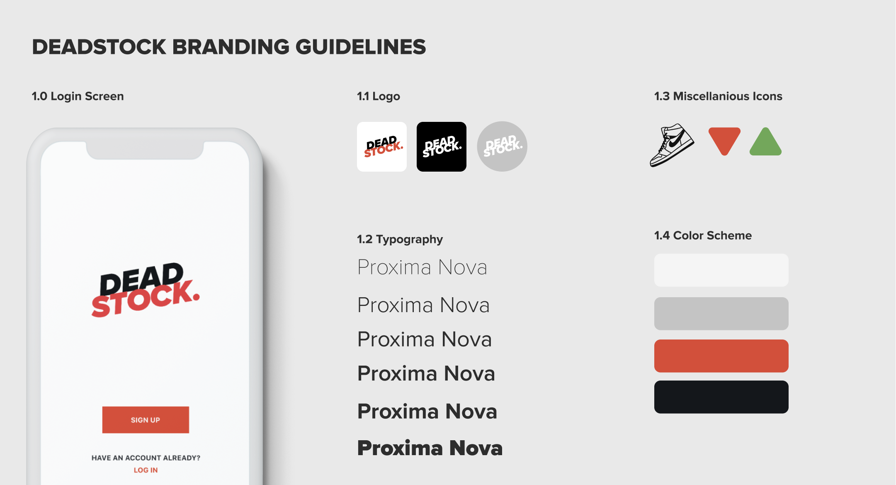

Project Summary
During my 10 weeks at Facebook, I went through an intensive iOS mobile development and prototyping program and soon after was tasked with the challenge of creating an industry-level application at the culminatioin of my internship. Drawing from my interest in the sneaker industry, I decided to create DeadStock - a mobile application that allows you to track the rises and falls of sneaker prices with an added sneaker news feature to allow you to stay up to date with the latest drops and releases.
Usability & Adressable Market
Inspired in design by Apple's 'stocks' application, DeadStock is a simply designed app that allows users to view sneaker prices at their fingertips. As someone who constantly checks up on the status of sneakers that I personally love and am looking to invest in, I always find myself checking applications like GOAT and StockX pretty regularly. What is unique about DeadStock that sets it apart from these applications, is it's simplicity and primary purpose to provide iniformatoin for user consumption, rather than to engage users in making purchases, sell or bid on posted sneakers. That being said, the purpose of this project was more so focused on the design and implementaton of the applcation, rather than the market appeal & usability, which is why little-to-no time was spent on user research/testnig during the short, fast-paced timeframe.
Part 1
Designing & Prototyping
Screen Archetypes
The design component of this project started off by listing all of the capabilities I wanted my applicatioin to have. Soon after, I was able to map these capabilities to specific screen archetypes, marking which buttons lead to which transitions, etc.

User Flows and Low Fidelity Wireframes
I had a pretty good idea of what I wanted each screen of this application to look like, so I took to procreate to roughly sketch a user-flow and layout of where all the main elements would go. The main concepts to take away from this wireframe are the layout of the sneakers as "stock" modules, the navigatiion between elemets of the tab bar, as well as the branding/logos/icons.


High Fidelity Wireframe
After soldifying my hand-drawn wireframe and recieving feedback from my Facebook mentor, I used figma and InVision design studio to create a digital wireframe of the application. The purpose of this wireframe was to animate any components/test the use and feel of the design choices before implementation. Tap gestures and hold-touches were simulated with animations in InVision, and the official brandnig/icons/color scheme were documented and approved for implementation in ths step as well. Some changes that were made between this wireframe and the official implementation of the app (with the exception of a few icons and design choices) was the transition from a "wishlist" tab to a news tab after a bit of user testing within the Facebook developer community.


Part 2
Scraper & Data Population
Due to a lack of developer-friendly and publicialy shared sneaker data (APIs etc), I decided to create a StockX web scraper from scratch. For more in-depth information on the technical implementation of the scraper, check out the GitHub repo here. A general explanation of the tools/python libraries used for the scraper is as follows:
URL Scraper
Scraped 5-700 sneaker maini-page links from the StockX year-by-year breakdown page using selenium, a python binding thatt allows developers to access Selenium WebDrivers; in this case, I used selenium to compile a list of URLs according to specific product parameters (i.e. Jordan 1, Nike, made before the year 2016, etc.).
SNEAKER DATA SCRAPER
Accessed each URL specified by the URL scraper using Beautiful Soup to extract specific information from the webpage by isolating html identifiers and dividers by their class name, content, and more. Was able tto extract data specified earlier in this spec (52-week high/low, volatility, colorway, background, retail price) etc. using this method.
Part 3
Objective C & Parse Implementation
For more information on the official implementation and development process, visit the GitHub repo here.
Database Models
Using Parse/Firebase, I was able to perform User Authentication/object storage. To do so, I created several of my own objects, including User objects, Sneaker Objects, News Article objects, and more. Here is an example of the model elements/schema of a sneaker object stored in the Parse database:
Part 4
Final Deliverable
Final Thoughts
Overall, this was a really fun project and great way to spend my summer. It was my first attempt at creating an industry-level iOS application, and expanding my design knowledge beyond mockups and prototypes - I gained an understanding for "designing for production," and the effort it takes too translate certain design choices to iOS. Additionally, I got great advice from Product Designers at Facebook for documenting my design process, and helping me craft my design around certain metrics and parameters.